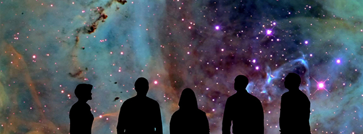

Each month the Adler Planetarium hosts Adler after Dark, a 21+ evening event. During the DIY Science themed Adler after Dark, participants created their own WWT Tours. The winning tours were shown on the dome in the Grainger Sky Theater at the end of the night.